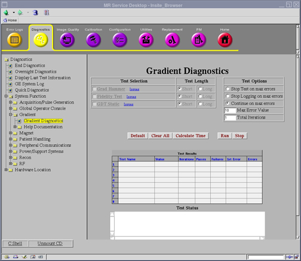

Proprietary to General Electric Company
Direction 5440000, Rev# 5
Signa HDxt Service Methods
Module Version 3.0, Version Date 6/16/08
Proprietary to General Electric Company |
Diagnostics >> System Function >> Gradient >> Gradient Diagnostics
Diagnostics >> Hardware Location >> PGR Cabinet >> Gradient >> Gradient Diagnostics
Illustration 1: Gradient Diagnostics screen

The Fidelity Diagnostic is designed to verify the accuracy, stability, and symmetry of the gradient amplifier outputs. Performing this diagnostic isolates any failures to the gradient subsystem.
This diagnostic exercises only the gradient subsystem. This includes all of the gradient hardware inside the gradient cabinet. It also includes the gradient coil and everything in the transmission circuit between the gradient cabinet and the gradient coil.
The system uses an Ethernet Link to initiate the XGD GMC to start the test. The XGD GMC then uses data stored in onboard read-only memory to generate test waveforms. Gradient amplifiers drive these test waveforms to the gradient coil.
Ethernet Link from SCP to XGD GMC must be functional.
Click [Calculate Time] to get an estimate of the time it will take to run the selected diagnostics.
Click [Run] to initiate test.
The diagnostic checks that Ethernet communication is established between SCP and XGD GMC.
A ramp-sampled EPI readout waveform is generated on each axis, separately, for 100 shots with 64 views in each shot. Gradient error data is acquired, and the following tests are performed.
Accuracy - Across all 100 shots, the largest point of inaccuracy is recorded, in units of microampere-seconds.
Shot to Shot Stability - Each of the 100 shots is compared to the others. The largest difference between any two shots is recorded, in units of microampere-seconds.
View to View Stability - Each pair of positive/negative views in the 100 x 64 views is compared to the others. The largest difference between any two views is recorded, in units of microampere-seconds.
EPI Plus/minus Symmetry - Each view represented by a positive half-cycle is compared to the subsequent view represented by a negative half-cycle.
Output values are judged pass or fail. In the event of failure, the details of the failure can be found in the GE System Log.
Although, in the case of errors you can click the 1st Error number to see the nature of the error, it is recommended that you view the GE System Log to view all the errors that were recorded.